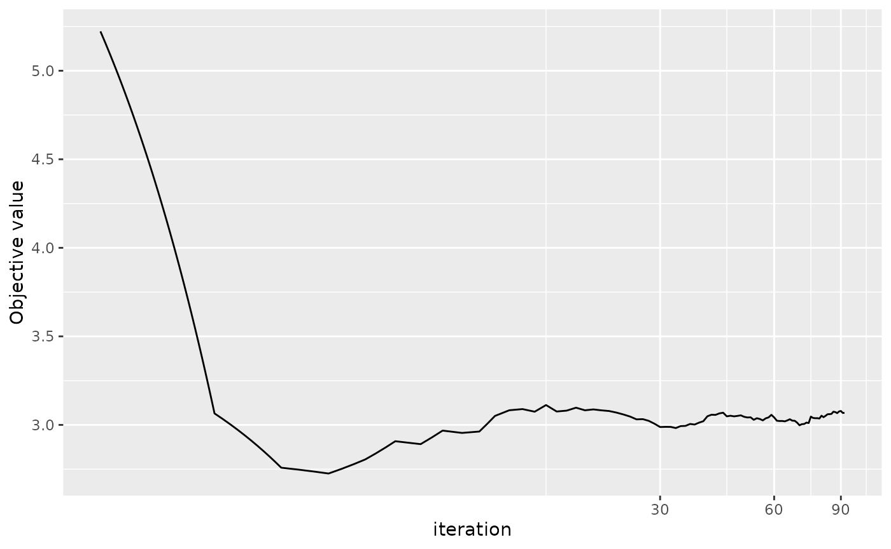

Introduction
The R package RRRR provides methods for estimating online Robust Reduced-Rank Regression.
If you use any code from the RRRR package in a
publication, please use the following citation:
Yangzhuoran Yang and Ziping Zhao (2020). RRRR: Online Robust Reduced-Rank Regression Estimation. R package version 1.1.0. https://pkg.yangzhuoranyang.com/RRRR/.
This vignette aims to provide illustrations to estimate and update (Online) Reduced-Rank Regression using various methods contained in the package.
Formulation
The formulation of the reduced-rank regression is as follow: \[y = \mu +AB' x + D z+innov,\] where for each realization
- \(y\) is a vector of dimension \(P\) for the \(P\) response variables,
- \(x\) is a vector of dimension \(Q\) for the \(Q\) explanatory variables that will be projected to reduce the rank,
- \(z\) is a vector of dimension \(R\) for the \(R\) explanatory variables that will not be projected,
- \(\mu\) is the constant vector of dimension \(P\),
- \(innov\) is the innovation vector of dimension \(P\),
- \(D\) is a coefficient matrix for \(z\) with dimension \(P*R\),
- \(A\) is the so called exposure matrix with dimension \(P*r\), and
- \(B\) is the so called factor matrix with dimension \(Q*r\).
The matrix resulted from \(AB'\) will be a reduced rank coefficient matrix with rank of \(r\). The function estimates parameters \(\mu\), \(A\), \(B\), \(D\), and \(Sigma\), the covariance matrix of the innovation’s distribution.
Simulation
To simulate example data that can be used to estimate reduced-rank
regression, use function RRR_sim.
data <- RRR_sim()
data
#> Simulated Data for Reduced-Rank Regression
#> ------------
#> Specifications:
#> N P Q R r
#> 1000 3 3 1 1
#>
#> Coefficients:
#> mu A B D Sigma1 Sigma2 Sigma3
#> 1 0.10000 1.08427 0.80637 0.61341 1.00000 0.00000 0.00000
#> 2 0.10000 -0.71361 0.22911 -0.34606 0.00000 1.00000 0.00000
#> 3 0.10000 -1.23433 0.27142 0.37301 0.00000 0.00000 1.00000A number of parameters can be specified. See ?RRR_sim.
The default arguments are set in such a way that the matrix resulted
from \(AB'\) will be a reduced rank
coefficient matrix with rank of \(r\).
str(data)
#> List of 4
#> $ spec:List of 11
#> ..$ P : num 3
#> ..$ N : num 1000
#> ..$ Q : num 3
#> ..$ R : num 1
#> ..$ A : num [1:3, 1] 1.084 -0.714 -1.234
#> ..$ B : num [1:3, 1] 0.806 0.229 0.271
#> ..$ mu : num [1:3] 0.1 0.1 0.1
#> ..$ D : num [1:3, 1] 0.613 -0.346 0.373
#> ..$ r : num 1
#> ..$ Sigma: num [1:3, 1:3] 1 0 0 0 1 0 0 0 1
#> ..$ innov: num [1:1000, 1:3] -0.261 0.207 0.971 0.571 -0.734 ...
#> $ y : num [1:1000, 1:3] -0.389 1.165 1.671 0.614 -1.585 ...
#> $ x : num [1:1000, 1:3] 0.4048 0.2184 1.2618 -0.7283 0.0706 ...
#> $ z : num [1:1000] -0.6855 0.4995 -0.3019 0.0231 -0.9905 ...
#> - attr(*, "class")= chr [1:2] "RRR_data" "list"The returned list of RRR_sim contains the input
specifications and the data points \(y\), \(x\)
and \(z\).
Reduced-Rank Regression using Gaussian MLE : RRR
The Gaussian Maximum Likelihood Estimation method is described in Johansen, S. (1991). This method is not robust in the sense that it assumes a Gaussian distribution for the innovations which does not take into account the heavy-tailedness of the true distribution and outliers.
res_gmle <- RRR(y=data$y, x=data$x, z = data$z)
res_gmle
#> Reduced-Rank Regression
#> ------------
#> Specifications:
#> N P Q R r
#> 1000 3 3 1 1
#>
#> Coefficients:
#> mu A B D Sigma1 Sigma2 Sigma3
#> 1 0.012938 1.013672 0.942682 0.580991 3.345338 -0.299069 -3.038414
#> 2 0.148413 -0.588085 0.273039 -0.323479 -0.299069 3.372916 1.709844
#> 3 0.291647 -1.101053 0.330779 0.400010 -3.038414 1.709844 19.261569The matrix \(z\) and the constant \(\mu\) term are optional.
Robust Reduced-Rank Regression using Cauchy distribution and
Majorisation-Minimisation: RRRR
The Majorisation-Minimisation estimation method is partly described in Zhao, Z., & Palomar, D. P. (2017). This method is robust in the sense that it assumes a heavy-tailed Cauchy distribution for the innovations. As before the matrix \(z\) and the constant term \(\mu\) are optional.
res_mm <- RRRR(y=data$y, x=data$x, z = data$z,
itr = 100,
earlystop = 1e-4)
res_mm
#> Robust Reduced-Rank Regression
#> ------
#> Majorisation-Minimisation
#> ------------
#> Specifications:
#> N P Q R r
#> 1000 3 3 1 1
#>
#> Coefficients:
#> mu A B D Sigma1 Sigma2 Sigma3
#> 1 0.053612 0.445764 1.952775 0.576112 0.653569 -0.022268 -0.020604
#> 2 0.099420 -0.280023 0.552379 -0.322447 -0.022268 0.703277 0.014187
#> 3 0.099396 -0.507451 0.612118 0.361631 -0.020604 0.014187 0.692843Additional arguments that are worth noticing are itr,
which control the maximum number of iteration, and
earlystop, which is the criteria to stop the algorithm
early. The algorithm will stop if the improvement on objective value is
small than earlystop \(\times\
objective\_from\_last\_iteration\).
This method is an iterative optimization algorithm so we can use the
inbuilt plot.RRRR method to see the convergence plot of the
algorithm.
plot(res_mm, aes_x = "iteration", xlog10 = TRUE)
Argument aes_x can set the x axis to be the number of
iteration or the run time. Argument xlog10 can indicate
whether the scale of x axis is log 10 transformed.
Online Robust Reduced-Rank Regression: ORRRR
The description of the generic Stochastic Successive Upper-bound Minimisation method and the Sample Average Approximation can be found in Razaviyayn, M., Sanjabi, M., & Luo, Z. Q. (2016).
There are two major estimation methods supported:
- SMM: Stochastic Majorisation-Minimisation
- SAA: Sample Average Approximation
The algorithm is online in the sense that the data is continuously incorporated and the algorithm can update the parameters accordingly. As before the matrix \(z\) and the constant term \(\mu\) are optional.
At each iteration of SAA, a new realisation of the parameters is achieved by solving the minimisation problem of the sample average of the desired objective function using the data currently incorporated. This can be computationally expensive when the objective function is highly nonconvex. The SMM method overcomes this difficulty by replacing the objective function by a well-chosen majorising surrogate function which can be much easier to optimise.
SMM: Stochastic Majorisation-Minimisation
By default the function ORRRR uses SMM.
res_smm <- ORRRR(y=data$y, x=data$x, z=data$z,
initial_size = 100, addon = 10)
#> Loading required namespace: lazybar
res_smm
#> Online Robust Reduced-Rank Regression
#> ------
#> Stochastic Majorisation-Minimisation
#> ------------
#> Specifications:
#> N P R r initial_size addon
#> 1000 3 1 1 100 10
#>
#> Coefficients:
#> mu A B D Sigma1 Sigma2 Sigma3
#> 1 0.054144 0.449807 1.937679 0.575796 0.671604 -0.023718 -0.020262
#> 2 0.102738 -0.283247 0.544009 -0.323879 -0.023718 0.721810 0.012375
#> 3 0.100835 -0.509571 0.608201 0.360788 -0.020262 0.012375 0.707851The simulated data set is of size 1000. In the above command, in the first iteration 100 realisations are used in the estimation with 10 more data points in each of the following iteration. Because of the increasing data size, the estimation will be slower the longer the algorithm run. Therefore, the estimated time left in the progress bar is not very accurate in this sense.
The output from ORRRR can also plotted using
plot.RRRR.
plot(res_smm)
SAA: Sample Average Approximation
When using SAA, there are two sub solver supported in each iteration.
- optim: the
optimfunction from thestatspackage, and - MM: Majorisation-Minimisation method with ten subiterations by default.
res_saa_optim <- ORRRR(y=data$y, x=data$x, z=data$z,
method = "SAA", SAAmethod = "optim")
res_saa_mm <- ORRRR(y=data$y, x=data$x, z=data$z,
method = "SAA", SAAmethod = "MM")optim is a general purpose solver which means it will be
quite slow for this specific problem, especially when the number of
parameters is large. Embedding majorisation-minimisation into
subiteration of SAA is more like a heuristic without solid theory
backing up its efficiency. Due to the time constraint we do not show the
estimated result here.
Truly online: update.RRRR
With the result from ORRRR, user can still update it
with newly achieved data using function update. Note the
result from RRRR can also be updated where it simply takes
the result from RRRR as the starting point in online
estimation.
newdata <- RRR_sim()
res2_smm <- update(res_smm, newy=newdata$y, newx=newdata$x, newz=newdata$z)
res2_smm
#> Online Robust Reduced-Rank Regression
#> ------
#> Stochastic Majorisation-Minimisation
#> ------------
#> Specifications:
#> N P R r initial_size addon
#> 2000 3 1 1 1010 10
#>
#> Coefficients:
#> mu A B D Sigma1 Sigma2 Sigma3
#> 1 0.174109 -0.180878 1.928014 0.486495 1.786481 -0.843835 -0.102663
#> 2 0.079571 0.200884 -0.429651 -0.075581 -0.843835 1.419247 0.132694
#> 3 0.104804 -0.314889 1.254126 0.441822 -0.102663 0.132694 0.873581Without other arguments specified, update will just take
the original specification in the model. If it applies to output of
RRRR, then the default would be the default arguments in
ORRRR, i.e., with method set to “SMM” and
addon set to 10.